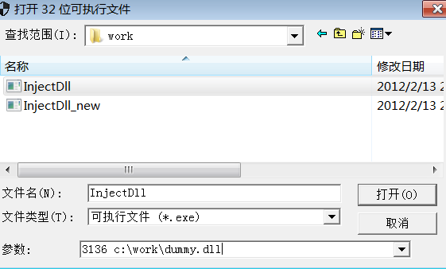
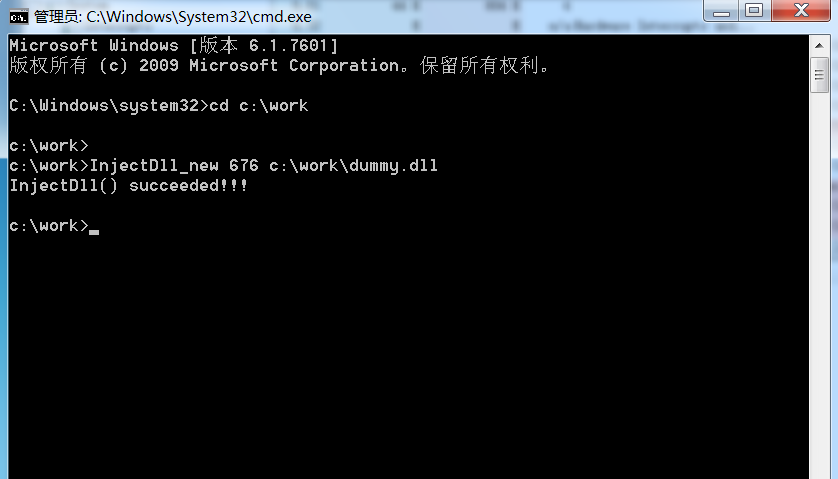

再现DLL注入失败
尝试将Dummy.dll文件注入Windows7的系统时 会出现失败 接下来将再现
源代码
1 | BOOL InjectDll(DWORD dwPID, LPCTSTR szDllPath) |
这就是典型的Dll注入代码 在之前已经分析过了
Dummy.cpp1
2
3
4
5
6
7
8
9
10
11
12
13
14
15
16
17
18
19
20
21
22
23
24
25
26
27
28#include "windows.h"
#include "tchar.h"
BOOL WINAPI DllMain(HINSTANCE hinstDLL, DWORD fdwReason, LPVOID lpvReserved)
{
TCHAR szPath[MAX_PATH] = {0,};
TCHAR szMsg[1024] = {0,};
TCHAR *p = NULL;
switch( fdwReason )
{
case DLL_PROCESS_ATTACH :
GetModuleFileName(NULL, szPath, MAX_PATH);
p = _tcsrchr(szPath, L'\\');
if( p != NULL )
{
_stprintf_s(szMsg, 1024 - sizeof(TCHAR),
L"Injected in %s(%d)",
p + 1, // Process Name
GetCurrentProcessId()); // PID
OutputDebugString(szMsg);
}
break;
}
return TRUE;
}
DllMain()函数代码非常简单 若注入成功指定进程 就输出相关调试信息
注入测试
首先 运行procexp工具 查看目标进程的PID notepad的PID
然后分别使用InjectDll.exe分别向他们注入dummy.dll文件 注入前先把InjectDll.exe和dummy.dll复制到工作文件夹 使用下图命令注入dll
搜索dummy.dll
原因分析
调试
我们向svchost.exe进程注入的过程中 调用CreateRemoteThread()API时失败了 错误代码为8 下面使用OD打开程序 在OPEN窗口中输入相应参数后打开

我们已经知道调用CreateRemoteThread()API时失败 所以我们直接在此API处设置断点
F9运行程序 停在断点处
F8单步执行几步 在OD中可以看到 这一串字符
我们从OD中看到了失败的情形 但仍然没有找到原因
调试#2
重新运行OD 让代码停在CreateRemoteThread()API处
查看进程栈中的数据
F7进入函数查看到内部调用了CreateRemoteThreadEx()API函数 继续单步运行到函数里 运行到ZwCreatRemoteThreadEx()API代码处
我们继续跟踪进入该API函数 可以看到最终通过SYSENTER指令进入内核模式 无法继续用户模式调试
实际上 CreateRemoteThreadEx()API函数 ZwCreatRemoteThreadEx()API函数在Vista版本之前是不存在的 所以我们推测是由于系统新增的API导致的DLL注入失败
我们通过搜索发现 在Windows Vista以后的OS中进行DLL注入时 直接调用ZwCreatRemoteThreadEx()API函数而非CreateRemoteThread()API就能成功注入DLL
我们比较参数可以发现 ZwCreatRemoteThreadEx()API的第七个参数值时时白的原因所在
稍作整理
在编写新的Dll注入程序前 先整理前面学过的内容 由于win7的会话管理机制发生了变化 CreateRemoteThread()API的内部实现代码发生了变化 最终使得注入的Dll无法发挥作用 原因在于 在APi内部创建远线程时采用了挂起模式 若远程进程属于会话0 则不会恢复运行 而是直接返回错误 **在reateRemoteThread()API内部调用ZwCreatRemoteThreadEx()API时 操作他的参数或者强制改变错误条件分支语句 就可以创建远程线程 成功注入DLL
InjectDll_new.exe
从前面我们知道 在win7中直接调用ZwCreatRemoteThreadEx()API要比CreateRemoteThread()API好得多 下面编写一个新的程序：1
2
3
4
5
6
7
8
9
10
11
12
13
14
15
16
17
18
19
20
21
22
23
24
25
26
27
28
29
30
31
32
33
34
35
36
37
38
39
40
41
42
43
44
45
46
47
48
49
50
51
52
53
54
55
56
57
58
59
60
61
62
63
64
65
66
67
68
69
70
71
72
73
74
75
76
77
78
79
80
81
82
83
84
85
86
87
88
89
90
91
92
93
94
95
96
97
98
99
100
101
102
103
104
105
106
107
108
109
110
111
112
113
114
115
116
117
118
119
120
121
122
123
124
125
126
127
128
129
130
131
132
133
134
135
136
137
138
139
140
141
142
143
144
145
146
147
148
149
150
151
152
153
154
155
156
157
158
159
160
161
162
163
164
165
166
167
168
169
170
171
172
173
174
175
176
177
178
179
180
181
182
183
184
185
186
187
188
189
190
191
192
193
194
195
196
197
198
199#include "windows.h"
#include "stdio.h"
#include "tchar.h"
BOOL SetPrivilege(LPCTSTR lpszPrivilege, BOOL bEnablePrivilege)
{
TOKEN_PRIVILEGES tp;
HANDLE hToken;
LUID luid;
if( !OpenProcessToken(GetCurrentProcess(),
TOKEN_ADJUST_PRIVILEGES | TOKEN_QUERY,
&hToken) )
{
_tprintf(L"OpenProcessToken error: %u\n", GetLastError());
return FALSE;
}
if( !LookupPrivilegeValue(NULL, // lookup privilege on local system
lpszPrivilege, // privilege to lookup
&luid) ) // receives LUID of privilege
{
_tprintf(L"LookupPrivilegeValue error: %u\n", GetLastError() );
return FALSE;
}
tp.PrivilegeCount = 1;
tp.Privileges[0].Luid = luid;
if( bEnablePrivilege )
tp.Privileges[0].Attributes = SE_PRIVILEGE_ENABLED;
else
tp.Privileges[0].Attributes = 0;
// Enable the privilege or disable all privileges.
if( !AdjustTokenPrivileges(hToken,
FALSE,
&tp,
sizeof(TOKEN_PRIVILEGES),
(PTOKEN_PRIVILEGES) NULL,
(PDWORD) NULL) )
{
_tprintf(L"AdjustTokenPrivileges error: %u\n", GetLastError() );
return FALSE;
}
if( GetLastError() == ERROR_NOT_ALL_ASSIGNED )
{
_tprintf(L"The token does not have the specified privilege. \n");
return FALSE;
}
return TRUE;
}
typedef DWORD (WINAPI *PFNTCREATETHREADEX)
(
PHANDLE ThreadHandle,
ACCESS_MASK DesiredAccess,
LPVOID ObjectAttributes,
HANDLE ProcessHandle,
LPTHREAD_START_ROUTINE lpStartAddress,
LPVOID lpParameter,
BOOL CreateSuspended,
DWORD dwStackSize,
DWORD dw1,
DWORD dw2,
LPVOID Unknown
);
BOOL IsVistaOrLater()
{
OSVERSIONINFO osvi;
ZeroMemory(&osvi, sizeof(OSVERSIONINFO));
osvi.dwOSVersionInfoSize = sizeof(OSVERSIONINFO);
GetVersionEx(&osvi);
if( osvi.dwMajorVersion >= 6 )
return TRUE;
return FALSE;
}
BOOL MyCreateRemoteThread(HANDLE hProcess, LPTHREAD_START_ROUTINE pThreadProc, LPVOID pRemoteBuf)
{
HANDLE hThread = NULL;
FARPROC pFunc = NULL;
if( IsVistaOrLater() ) // Vista, 7, Server2008
{
pFunc = GetProcAddress(GetModuleHandle(L"ntdll.dll"), "NtCreateThreadEx");
if( pFunc == NULL )
{
printf("MyCreateRemoteThread() : GetProcAddress(\"NtCreateThreadEx\") failed!!! [%d]\n",
GetLastError());
return FALSE;
}
((PFNTCREATETHREADEX)pFunc)(&hThread,
0x1FFFFF,
NULL,
hProcess,
pThreadProc,
pRemoteBuf,
FALSE,
NULL,
NULL,
NULL,
NULL);
if( hThread == NULL )
{
printf("MyCreateRemoteThread() : NtCreateThreadEx() failed!!! [%d]\n", GetLastError());
return FALSE;
}
}
else // 2000, XP, Server2003
{
hThread = CreateRemoteThread(hProcess,
NULL,
0,
pThreadProc,
pRemoteBuf,
0,
NULL);
if( hThread == NULL )
{
printf("MyCreateRemoteThread() : CreateRemoteThread() failed!!! [%d]\n", GetLastError());
return FALSE;
}
}
if( WAIT_FAILED == WaitForSingleObject(hThread, INFINITE) )
{
printf("MyCreateRemoteThread() : WaitForSingleObject() failed!!! [%d]\n", GetLastError());
return FALSE;
}
return TRUE;
}
BOOL InjectDll(DWORD dwPID, char *szDllName)
{
HANDLE hProcess = NULL;
LPVOID pRemoteBuf = NULL;
FARPROC pThreadProc = NULL;
DWORD dwBufSize = strlen(szDllName)+1;
if ( !(hProcess = OpenProcess(PROCESS_ALL_ACCESS, FALSE, dwPID)) )
{
printf("[ERROR] OpenProcess(%d) failed!!! [%d]\n",
dwPID, GetLastError());
return FALSE;
}
pRemoteBuf = VirtualAllocEx(hProcess, NULL, dwBufSize,
MEM_COMMIT, PAGE_READWRITE);
WriteProcessMemory(hProcess, pRemoteBuf, (LPVOID)szDllName,
dwBufSize, NULL);
pThreadProc = GetProcAddress(GetModuleHandle(L"kernel32.dll"),
"LoadLibraryA");
if( !MyCreateRemoteThread(hProcess, (LPTHREAD_START_ROUTINE)pThreadProc, pRemoteBuf) )
{
printf("[ERROR] MyCreateRemoteThread() failed!!!\n");
return FALSE;
}
VirtualFreeEx(hProcess, pRemoteBuf, 0, MEM_RELEASE);
CloseHandle(hProcess);
return TRUE;
}
int main(int argc, char *argv[])
{
// adjust privilege
SetPrivilege(SE_DEBUG_NAME, TRUE);
// InjectDll.exe <PID> <dll_path>
if( argc != 3 )
{
printf("usage : %s <PID> <dll_path>\n", argv[0]);
return 1;
}
if( !InjectDll((DWORD)atoi(argv[1]), argv[2]) )
{
printf("InjectDll() failed!!!\n");
return 1;
}
printf("InjectDll() succeeded!!!\n");
return 0;
}
在这个函数中变动的是 函数内部并没有直接调用CreateRemoteThread()API而是调用了为MyCreateRemoteThread()API的用户函数 在MyCreateRemoteThread()API函数内部先获取OS版本 若为Vista版本以上 则调用NtCreateThreadEx()API函数 反之 则调用CreateRemoteThread()API函数
注入练习
选择一个会话为0的服务进程练习
接下来运行命令

用procexp查看可以看到dll
这样就顺利向服务进程为0的会话中顺利注入DLL了